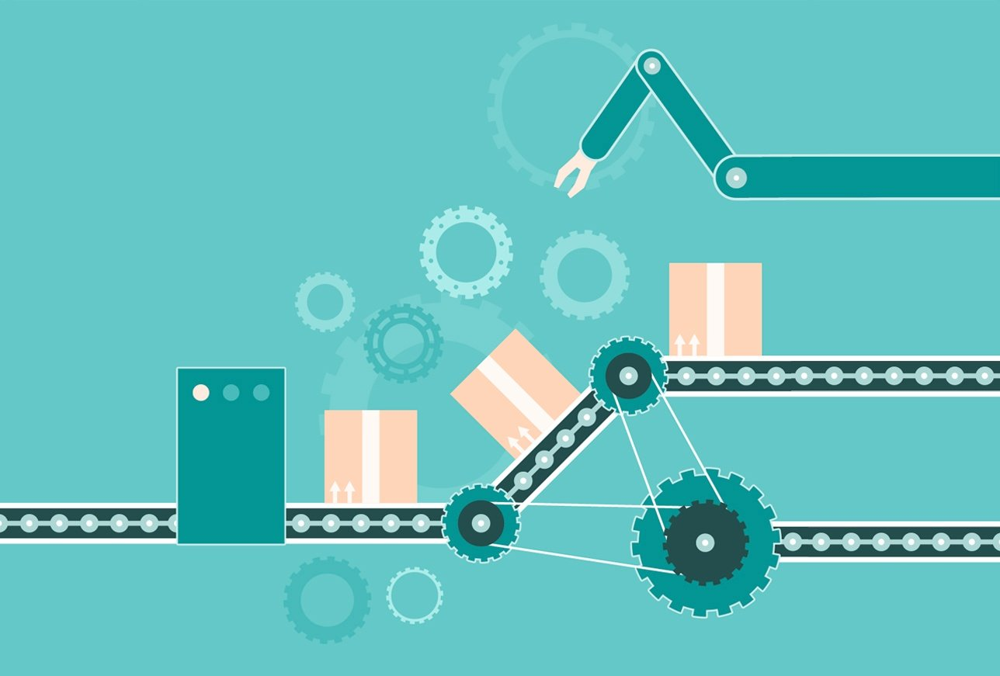

El departamento de producción es el área de una empresa que tiene como función principal la transformación de materias primas en productos finales.En función del tamaño de la empresa podemos tener varios niveles o cargos dentro de su estructura jerárquica como son los operarios de taller, encargados de taller o jefes de equipo, jefe de producción o director de producción, ingenieros de producción o el personal técnico especializado.
Operarios
Son las personas que realizan un trabajo directo en la fábrica de transformación de la materia prima en producto, siguiendo los requisitos de calidad impuestos por el cliente. Para realizar su trabajo correctamente se apoyan en los documentos de producción como pueden ser planos o especificaciones técnicas.
Encargados de taller o jefe de equipo
Jefe de producción o director de producción
El director de producción es el jefe directo de los encargados de taller y es el responsable del departamento de producción y por tanto de que los productos se entreguen dentro del plazo de entrega establecido.Se encarga de elaborar las estrategias de de producción, tomar decisiones y de planificar los procesos.Debe tener muy presente la metodología lean manufacturing para ir mejorando continuamente la capacidad de producción de la empresa.El director de producción también puede llamarse jefe de producción o gerente de producción.
Personal técnico especializado
Dentro del departamento de producción también puede haber personal técnico especializado el cuál se encarga de realizar los documentos de producción necesarios para que los operarios puedan ejecutar su trabajo correctamente como son: planos, órdenes de trabajo instrucciones técnicas, especificaciones técnicas…, así como la documentación que los operarios deben rellenar para su control.Todas las tareas que se realizan durante la producción deben estar reflejadas en estos documentos con el fin de contabilizar y controlar el proceso de producción, lo que permite distinguir mejor los fallos en el proceso y evaluar los proyectos de mejora.Este personal puede depender tanto del director de producción, como del director de área o del gerente de la empresa, en función de su tamaño.
